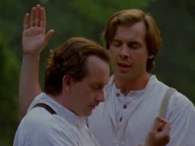
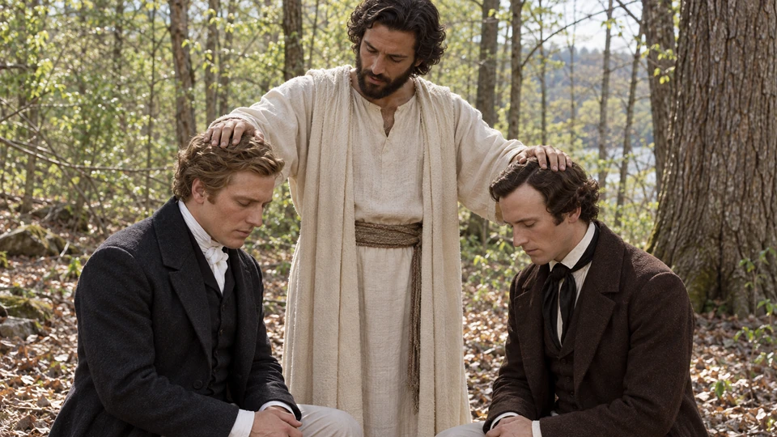
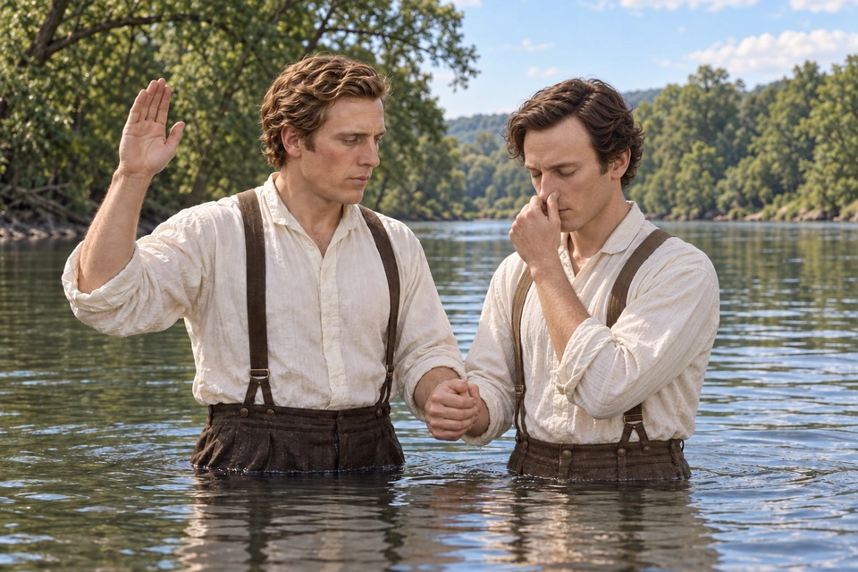
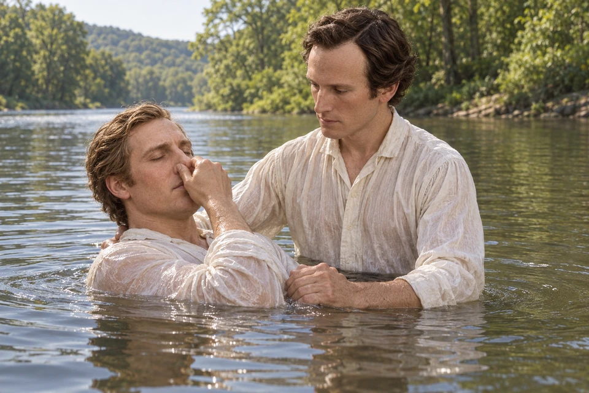
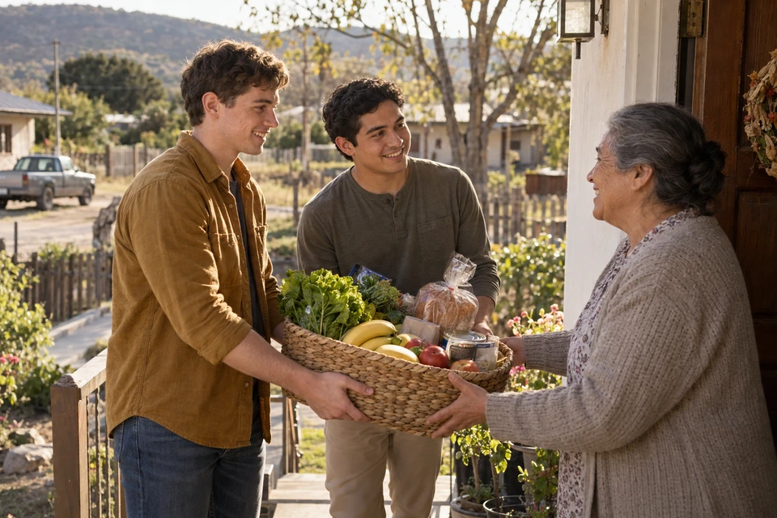
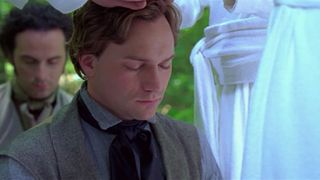

{kind=link}
{kind=link}

Church video
Restoration of the Aaronic Priesthood
Watch this Church reenactment, then return to Joseph’s account and notice the instruction that led him and Oliver into the water.
The Church of Jesus Christ of Latter-day Saints
Study Jesus Christ · Priesthood restoration
A question, a messenger, and the waters of baptism
ContinueFollow Joseph Smith and Oliver Cowdery from their question about baptism to John the Baptist’s message and the baptisms that followed. Read the scriptural account alongside its historical sources, then consider how preparation, repentance, and service point toward Jesus Christ.
The story begins with a question raised while translating the Book of Mormon. In Joseph Smith—History 1:68–69, Joseph and Oliver go into the woods to pray about baptism. Their account connects reading with asking and receiving a responsibility to act.
Read the passage slowly before looking at the artwork. Notice what led them to pray, how the messenger is introduced, and which words describe the authority he conferred. The opening artwork shows contemporary preparation at a sacrament table. As you study the restoration account, consider how authority and reverent preparation lead to service today.
Explore and study
An open book and a quiet place give this reader time to consider his question. This imagined contemporary scene invites patient study before deciding what a passage means. Joseph and Oliver’s account also begins with a question awakened while reading.

Explore and study
Joseph and Oliver bow their heads beneath the messenger’s hands. Their account connects a question about baptism with a call to serve. Read John the Baptist’s words and think about how repentance and baptism turn a heart toward Jesus Christ.
Read Doctrine and Covenants 13 Read Joseph Smith—History 1:68–73
Joseph Smith and Oliver Cowdery dated John the Baptist's visit to May 15, 1829, near Harmony, Pennsylvania. Their question about baptism arose during the translation of the Book of Mormon. They went apart to pray, and their accounts describe a heavenly messenger conferring authority by laying his hands upon them. The Church's history traces these reports, including Oliver's detailed account published in 1834. Read the history and its documentary sources.

Explore and study
Joseph raises his hand as Oliver prepares for immersion. Following John the Baptist’s direction, Joseph baptized Oliver first. Their account places this beginning on May 15, 1829.

Explore and study
Oliver steadies Joseph as he lowers toward the water. Oliver then baptized Joseph. The two men afterward ordained one another as John had directed. Joseph’s history describes the spiritual joy that followed their baptisms.
These artistic scenes follow the order in Joseph’s account. Clothing, gestures, and the precise riverbank are interpreted.
In Joseph Smith—History 1:68–73, the messenger identifies himself as John the Baptist and explains that further authority will follow. Joseph and Oliver then baptize each other. Doctrine and Covenants 13 preserves the words concerning the priesthood of Aaron, repentance, baptism, and the ministering of angels.
The detailed narratives were recorded after the event. Reading their dates and source notes helps us distinguish the remembered experience from the later work of writing Church history. The artwork accompanying this study offers an interpretation of that testimony, not an authenticated view of John's face or the exact clearing where they prayed.
After the baptisms, Joseph and Oliver ordained each other to the Aaronic Priesthood as commanded. Read Joseph Smith—History 1:71.
Consider the movement from reading to asking, and from receiving an answer to acting upon it. What question has scripture awakened in you? What faithful next step can you take? Return to the translation study, or continue to Peter, James, and John and the unfolding restoration of priesthood authority.
Doctrine and Covenants 13 preserves John the Baptist’s words about the keys of the ministering of angels, the gospel of repentance, and baptism by immersion for the remission of sins. Keep those words beside Joseph Smith—History 1:70–72, where the messenger explains the bounds of this authority and the greater authority that would follow.
The account distinguishes John’s conferral from Joseph and Oliver’s later actions. They baptized each other, then ordained each other as directed. Reading that sequence carefully is more useful than combining every event into one scene.
Compare the promise of preparation with John’s earlier witness in Mark 1:1–8. In each setting, his ministry turns attention toward Jesus Christ. The accounts belong to different times; this comparison concerns the purpose of his witness, not an assertion that every circumstance was the same.

Church video
Watch this Church reenactment, then return to Joseph’s account and notice the instruction that led him and Oliver into the water.
The Church of Jesus Christ of Latter-day Saints
John’s message speaks of repentance and baptism. Mosiah 18:8–10 describes a people willing to bear one another’s burdens and stand as witnesses of God. Read the whole setting around Alma’s invitation. How does belonging to Christ shape the way people treat one another?

Explore and study
Two young men bring groceries to a woman at her doorway. This imagined moment of care invites us to consider Alma’s call to bear one another’s burdens and ask what would help someone near us.

Church video
Church members share how restored priesthood has blessed their lives. Listen to their experiences, then consider the blessings and responsibilities described in the scriptures.
The Church of Jesus Christ of Latter-day Saints
These questions are optional invitations for personal study. Take time with one before moving to the next.
Read the account again and list its actions in order: asking, receiving, baptizing, and ordaining. Which details are in the text, and which have you supplied from a picture or a familiar retelling?
What does John’s message invite a person to prepare for? Choose one phrase to study in its surrounding scripture before turning it into a personal application.
Who near you is carrying a burden? Consider a small act of service, ask what would actually help, and respect the person’s wishes.
Continue with the Church’s historical account and its documentary notes. Notice the dates of the records and follow the linked sources when a detail raises a question.
Read the related testimony while keeping the distinct accounts and responsibilities in view.
Connect priesthood, scripture, ordinances, and the purpose of the Church.
Explore the wider history and its original sources.